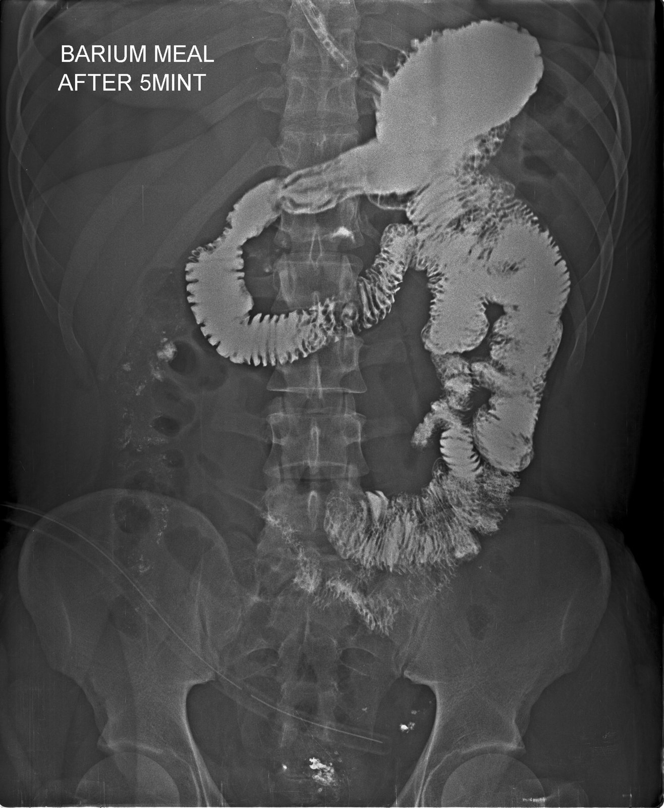
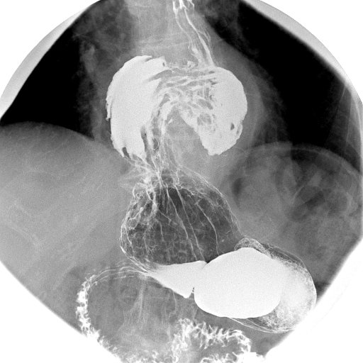

وجبة الباريومBarium meal
تصوير المعدة والاثني عشر بعد شرب الباريوم مع غاز، وغالباً بتقنية التباين المزدوج.
🎯 Purpose الغرض
تقييم المعدة والاثني عشر: القرحة (ulcer) والأورام والفتق الحجابي (hiatus hernia) والارتجاع وانسداد مخرج المعدة.
💉 Contrast الصبغة وطريقة إعطائها
باريوم عالي الكثافة بالفم مع حبيبات فوّارة تطلق CO2 (تباين مزدوج)، وأحياناً حقنة Buscopan أو glucagon وريدياً لإرخاء المعدة.
📋 Patient preparation تحضير المريض
- الصيام 6 ساعات على الأقل (لا أكل ولا شرب من منتصف الليل)
- عدم التدخين صباح الفحص لأنه يزيد إفرازات المعدة
- السؤال عن الزَّرَق (glaucoma) وأمراض القلب قبل إعطاء Buscopan
- السؤال عن الحمل عند النساء في سن الإنجاب
📸 Views / Positions الإسقاطات والوضعيات
- Supine AP / LPO — بالاستلقاء: تباين مزدوج لجسم المعدة وغارها (antrum)
- RAO (prone) — بالانبطاح: امتلاء البصلة الاثني عشرية (duodenal bulb)
- Right lateral — جانبي أيمن: الجدار الخلفي ومسافة خلف المعدة
- Erect / Trendelenburg — قائم أو مائل الرأس للأسفل لإظهار الفتق الحجابي والارتجاع
🚫 Contraindications موانع الفحص
- الاشتباه بانثقاب المعدة أو الاثني عشر
- انسداد الأمعاء الغليظة الكامل
- موانع Buscopan: الزَّرَق مغلق الزاوية وتسرّع القلب الشديد
⚠️ Complications المضاعفات
- الإمساك وانحشار الباريوم
- الاستنشاق عند المرضى ضعيفي البلع
- آثار Buscopan: زغللة مؤقتة في الرؤية وجفاف الفم
🖼️ Images · الصور

Sliding hiatus herniaفتق حجابي انزلاقي🔴 Pathology · مرضي
🩺 الأعراض Symptoms
- Heartburnحرقة المعدة
- Food coming back upارتجاع الطعام
- Chest painألم الصدر
⚠️ Red flags · متى تكون طارئة؟
- ألم شديد مع تقيّؤ وعدم القدرة على البلع (خاصة الفتق جنب المريء): اختناق الفتق أو انفتال المعدة (طارئ).
- تقيّؤ دم أو براز أسود: نزف (عاجل).
🩻 ليش نصوّر؟ وجبة الباريوم تُظهر جزءاً من المعدة فوق الحجاب الحاجز.
للتعليم فقط — مو للتشخيص.